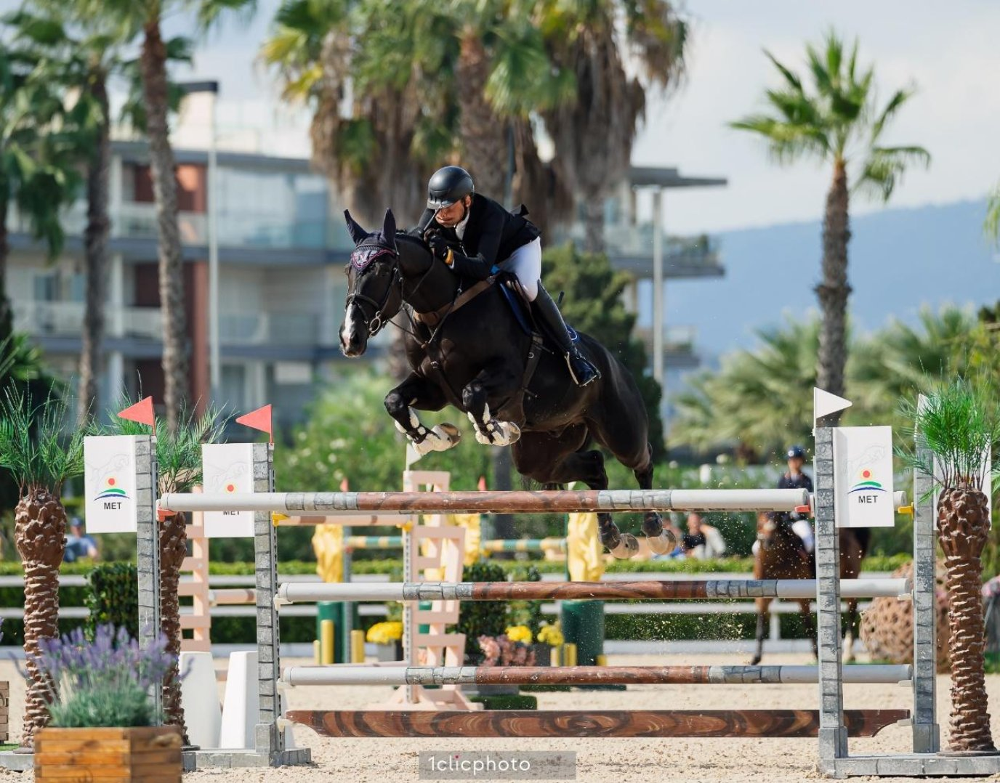

Old Boy SJ gana a los ocho años el Gran Premio 1,50 m del CSI3* de Oliva Nova
Antonio Matos Almeida se impuso con Old Boy SJ en el Gran Premio CSI3* 1,50 m Dammann Reitplatz-u. Sportplatzbau GmbH, prueba que cerró la última semana del Autumn MET I en el Centro Ecuestre Oliva Nova.

De los 51 participantes, ocho pasaron al desempate y solo tres repitieron cero. El más rápido de ese trío fue Old Boy SJ, castrado de ocho años por Upercut Kervec y Orville III, que paró el crono en 37,34 segundos.
Mariano Martínez Bastida se quedó a 56 centésimas con Bacardi O (Bellini Royal x Leonetti), segundo con 37,90 segundos. Dayro Arroyave cerró el podio con Arctic Light B (S & L Exxon Hedonist x Gingerino), también sin faltas, pero con un registro más conservador de 40,34 segundos.
Los cronos más bajos del desempate llegaron con cuatro puntos. Lars Kersten y Cascalino 7 (Casallco x Landclassic) marcaron 36,36 segundos y fueron cuartos; Janne Friederike Meyer-Zimmermann y Messi van't Ruytershof (Plot Blue x For Pleasure) terminaron quintos con 36,73. La lectura es sencilla: quien apretó de más en el desempate pagó en el obstáculo lo que ganó en el reloj.
Para Old Boy SJ era apenas su segundo Gran Premio de tres estrellas. «Saltó el primero la semana pasada, y ahora, en el segundo, ganó», explicó Almeida tras la prueba. «Todo el mundo quiere ganar el Gran Premio, y es realmente especial ganar aquí en Oliva, especialmente con un caballo de ocho años. El nivel de competición era alto, así que ganar es algo especial.»
El jinete subrayó también la escasa experiencia del caballo fuera de su país. «De hecho, es la primera vez que compite en un tour», dijo. «Cuando tenía seis años, solo competía en Portugal, y lo mismo cuando tenía siete. Así que todavía es bastante inexperto. Estoy muy contento en este momento, eso es todo lo que puedo decir.»
El Autumn MET 2026 se reanudará el 27 de octubre con el arranque del MET II.
Por Lucía Valdeolmos